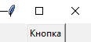
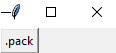
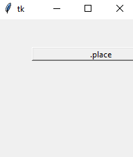
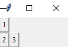
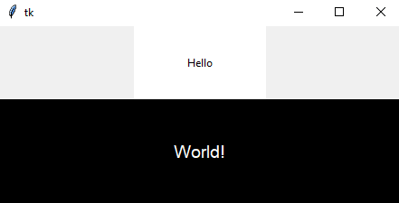

GUI
Структура
Для GUI - программы в TKinter, если обобщать, то нужно соблюдать следующий порядок:
1. Создать главное окно.
2. Создать виджеты и выполнить конфигурацию их свойств (опций).
3. Определить события, то есть то, на что будет реагировать программа.
4. Определить обработчики событий, то есть то, как будет реагировать программа.
5. Расположить виджеты в главном окне.
6. Запустить цикл обработки событий.
Hello World! и кнопки
Начнём раздел с Hello World!
from tkinter import *
root = Tk()
def hello():
print('Hello world!')
btn = Button(root, text='Кнопка', command=hello)
btn.pack()
root.mainloop()
Виджет Button
Кнопка - один из самых важных виджетов в TKinter.
Для создания кнопки используется конструктор Button(). Чтобы сделать элемент видимым, у него вызывается метод pack(). В итоге вверху окна будет красоваться кнопка:

Каждый виджет, в том числе кнопка, имеет ряд атрибутов, которые влияют на ее визуализацию и которые мы можем настроить. Подробнее о атрибутах.
from tkinter import *
root = Tk()
def hello():
print('Hello world!')
btn = Button(root, text='Кнопка',
bg='#fff', # Фоновый цвет
fg='#000', # Цвет текста
padx='20', # отступ от границ до содержимого по горизонтали
pady='8', # отступ от границ до содержимого по вертикали
font='16', # Размер шрифта
command=hello)
btn.pack()
root.mainloop()
Параметры pady, padx, font принимают числовое значение, а параметры background и foreground получают шестнадцатеричное значение цвета. Параметр font содержит определение шрифта.
Полный список параметров:
activebackground: цвет кнопки, когда она находится в нажатом состоянии
activeforeground: цвет текста кнопки, когда она в нажатом состоянии
bd: толщина границы (по умолчанию 2)
bg/background: фоновый цвет кнопки
fg/foreground: цвет текста кнопки
font: шрифт текста, например, font="Arial 14" - шрифт Arial высотой 14px, или font=("Verdana", 13, "bold") - шрифт Verdana высотой 13px с выделением жирным
height: высота кнопки
highlightcolor: цвет кнопки, когда она в фокусе
image: изображение на кнопке
justify: устанавливает выравнивание текста. Значение LEFT выравнивает текст по левому краю, CENTER - по центру, RIGHT - по правому краю
padx: отступ от границ кнопки до ее текста справа и слева
pady: отступ от границ кнопки до ее текста сверху и снизу
relief: определяет тип границы, может принимать значения SUNKEN, RAISED, GROOVE, RIDGE
state: устанавливает состояние кнопки, может принимать значения DISABLED, ACTIVE, NORMAL (по умолчанию)
text: устанавливает текст кнопки
textvariable: устанавливает привязку к элементу StringVar
underline: указывает на номер символа в тексте кнопки, который подчеркивается. По умолчанию значение -1, то есть никакой символ не подчеркивается
width: ширина кнопки
wraplength: при положительном значении строки текста будут переносится для вмещения в пространство кнопки
Позиционирование элементов
Метод pack
Для позиционирования элементов в окне применяются различные способы, и самый простой способ представляет вызов у элемента метода pack(). Этот метод принимает следующие параметры:
expand: если равно True, то виджет заполняет все пространство контейнера.
fill: определяет, будет ли виджет растягиваться, чтобы заполнить свободное пространство вокруг. Этот параметр может принимать следующие значения: NONE (по умолчанию, элемент не растягивается), X (элемент растягивается только по горизонтали), Y (элемент растягивается только по вертикали) и BOTH (элемент растягивается по вертикали и горизонтали).
side: выравнивает виджет по одной из сторон контейнера. Может принимать значения: TOP (по умолчанию, выравнивается по верхней стороне контейнера), BOTTOM (выравнивание по нижней стороне), LEFT (выравнивание по левой стороне), RIGHT (выравнивание по правой стороне).
from tkinter import *
root = Tk()
btn = Button(root, text='.pack')
btn.pack(side=LEFT)
root.mainloop()

Метод place
Метод place() позволяет более точно настроить параметры позиционирования. Он принимает следующие параметры:
height и width: устанавливают соответственно высоту и ширину элемента в пикселях
relheight и relwidth: также задают соответственно высоту и ширину элемента, но в качестве значения используется число float в промежутке между 0.0 и 1.0, которое указывает на долю от высоты и ширины родительского контейнера
x и y: устанавливают смещение элемента по горизонтали и вертикали в пикселях соответственно относительно верхнего левого угла контейнера
relx и rely: также задают смещение элемента по горизонтали и вертикали, но в качестве значения используется число float в промежутке между 0.0 и 1.0, которое указывает на долю от высоты и ширины родительского контейнера
bordermode: задает формат границы элемента. Может принимать значение INSIDE (по умолчанию) и OUTSIDE
anchor: устанавливает опции растяжения элемента. Может принимать значения n, e, s, w, ne, nw, se, sw, c, которые являются сокращениями от Noth(север - вверх), South (юг - низ), East (восток - правая сторона), West (запад - левая сторона) и Center (по центру). Например, значение nw указывает на верхний левый угол
from tkinter import *
root = Tk()
btn = Button(root, text='.place')
btn.place(relheight=0.1, relwidth=1, y=20, x=30, relx=0.1, rely=0.1)
root.mainloop()

Метод grid
Метод grid применяет другой подход к позиционированию элементов, нежели метод place, позволяя поместить элемент в определенную ячейку условной сетки или грида.
Метод grid применяет следующие параметры:
column: номер столбца, отсчет начинается с нуля
row: номер строки, отсчет начинается с нуля
columnspan: сколько столбцов должен занимать элемент
rowspan: сколько строк должен занимать элемент
ipadx и ipady: отступы по горизонтали и вертикали соответственно от границ элемента до его текста
padx и pady: отступы по горизонтали и вертикали соответственно от границ ячейки грида до границ элемента
sticky: выравнивание элемента в ячейке, если ячейка больше элемента. Может принимать значения n, e, s, w, ne, nw, se, sw, которые указывают соответствующее направление выравнивания
from tkinter import *
root = Tk()
btn_1 = Button(root, text='1')
btn_2 = Button(root, text='2')
btn_3 = Button(root, text='3')
btn_1.grid(row=0, column=0)
btn_2.grid(row=1, column=0)
btn_3.grid(row=1, column=1)
root.mainloop()

Label
Текстовые метки в Python представлены элементом Label. Этот элемент позволяет выводить статический текст без возможности редактирования.
Полный список параметров:
anchor: устанавливает позиционирование текста
bg/background: фоновый цвет
bitmap: ссылка на изображение, которое отображается на метке
bd: толщина границы метки
fg/foreground: цвет текста
font: шрифт текста, например, font="Arial 14" - шрифт Arial высотой 14px
height: высота элемента
cursor: курсор указателя мыши при наведении на метку
image: ссылка на изображение, которое отображается на метке
justify: устанавливает выравнивание текста. Значение LEFT выравнивает текст по левому краю, CENTER - по центру, RIGHT - по правому краю
padx: отступ от границ элемента до его текста справа и слева
pady: отступ от границ элемента до его текста сверху и снизу
relief: определяет тип границы, по умолчанию значение FLAT
text: устанавливает текст метки
textvariable: устанавливает привязку к элементу StringVar
underline: указывает на номер символа в тексте кнопки, который подчеркивается. По умолчанию значение -1, то есть никакой символ не подчеркивается
width: ширина элемента
wraplength: при положительном значении строки текста будут переносится для вмещения в пространство элемента
from tkinter import *
root = Tk()
l_1 = Label(text='Hello', bg='white', fg='black', width=20, height=10)
l_2 = Label(text='World!', bg='black', fg='white', width=40, height=10, padx=1, pady=1, font="Arial 14")
l_1.grid(row=0, column=0)
l_2.grid(row=1, column=0)
root.mainloop()
